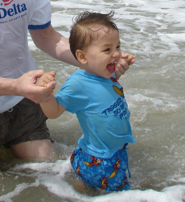

| Brenton Neal Nicholas was born in Kazakhstan in 2006. He spent his first few months in an orphanage before he was adopted by Ken and Nancy Nicholas, who brought him to Georiga and raised him as their son. |
 Young Brenton on his first trip to the beach. |